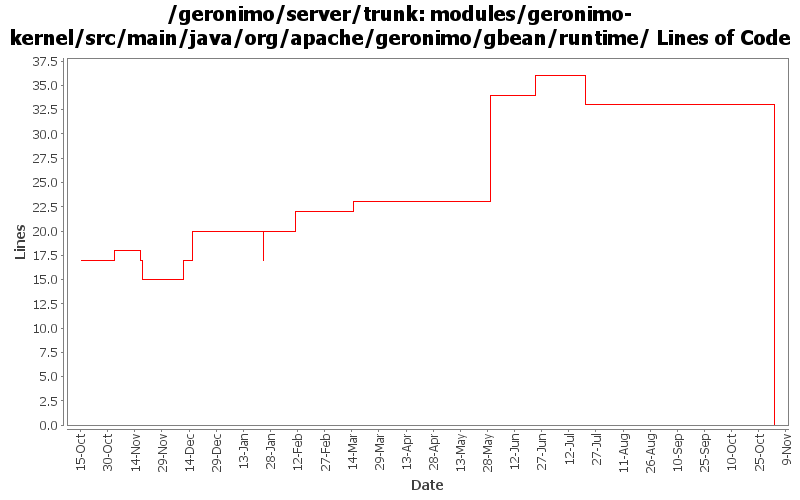

[root]/modules/geronimo-kernel/src/main/java/org/apache/geronimo/gbean/runtime

| Author | Changes | Lines of Code | Lines per Change |
|---|---|---|---|
| Totals | 68 (100.0%) | 58 (100.0%) | 0.8 |
| dwoods | 3 (4.4%) | 12 (20.7%) | 4.0 |
| rickmcguire | 4 (5.9%) | 9 (15.5%) | 2.2 |
| djencks | 5 (7.4%) | 8 (13.8%) | 1.6 |
| hogstrom | 2 (2.9%) | 7 (12.1%) | 3.5 |
| kevan | 30 (44.1%) | 6 (10.3%) | 0.2 |
| jlaskowski | 1 (1.5%) | 6 (10.3%) | 6.0 |
| akulshreshtha | 2 (2.9%) | 5 (8.6%) | 2.5 |
| dims | 1 (1.5%) | 4 (6.9%) | 4.0 |
| vamsic007 | 4 (5.9%) | 1 (1.7%) | 0.2 |
| prasad | 16 (23.5%) | 0 (0.0%) | 0.0 |
GERONIMO-3565. Modules distributed amongst framework/modules and plugins
0 lines of code changed in 16 files:
Retrying rev 499201 with some modifications. The getters/setters must be added explicitly using addOperation to be able to invoke them using kernel.invoke(...)
2 lines of code changed in 1 file:
GERONIMO-3318 LocalAttributeManager unable to save updates to LoginModuleControlFlag attribute
o Added a ClassLoader parameter to setValue() and addGBean() methods in ManageableAttributeStore interface
o Added a ClassLoader parameter to GBeanOverride.getAsText() so that the configuration's classLoader could be used to find PropertyEditor
o GBeanInstance.updateManageableAttribute() now uses the configuration's classLoader with ManageableAttributeStore.setValue() call
1 lines of code changed in 1 file:
GERONIMO-2385 server does not update any state when persistent configuration is loaded and ready to serve applications
1 lines of code changed in 1 file:
GERONIMO-3257 introduce ordering so reference collections get updated before dependencies are notified
5 lines of code changed in 1 file:
GERONIMO-3246 Cleanup exception handling so stack traces for first failures are not discarded.
9 lines of code changed in 4 files:
GERONIMO-2598 Deploy tool prints useless message if configuration start fails. Rakesh, thanks for the patch.
11 lines of code changed in 2 files:
Provide more reasons for failure
1 lines of code changed in 1 file:
Try to help show what went wrong if a configuration won
't start
2 lines of code changed in 1 file:
GERONIMO-2607 reversing the kernel patch from ealier. Seems to have broken openejb. We'll reapply when the cause has been corrected.
5 lines of code changed in 1 file:
GERONIMO-2607 : Deprecated old addOperation methods, added private
addOperation methods
updated GBeanInfoTest
Modified GBeanOperation, this class is not serialized
2 lines of code changed in 1 file:
Fix for the InvalidClassException i was having (and others were having sporadically). Problem is similar to the one in GERONIMO-1020. Unless the exact same jar is used for ser/de-ser, we get InvalidClassException, if you build the geronimo-kernel-xxx-SNAPSHOT.jar on your box and the maven2 pulls another SNAPSHOT jar from the remote repo, you are %&^*&ed
4 lines of code changed in 1 file:
GERONIMO-2607 Added returnType to GOperationInfo, This modifies GBeanInfoBuilder and breaks backward compatibility
3 lines of code changed in 1 file:
Source cleanup: removed unnecessary import statements.
0 lines of code changed in 1 file:
GERONIMO-2537 Update the src headers in server/trunk/modules to be compliant with the new ASF src header and copyright policy (http://www.apache.org/legal/src-headers.html). I also did some cleanup of the src headers and tried to make them all a consistent format
6 lines of code changed in 30 files:
GERONIMO-2386 Cleanup debug log entries created during server startup
0 lines of code changed in 2 files:
Partial fix for GERONIMO-2537 All Geronimo source files must be brought in line with the new ASF source header and copyright notice policy
The modules directory is supposed to be migrated. There're some issues with some files, but they'll be handled manually
6 lines of code changed in 1 file:
GERONIMO-2492 first steps, make the WebServiceBuilder a little more flexible
0 lines of code changed in 2 files: